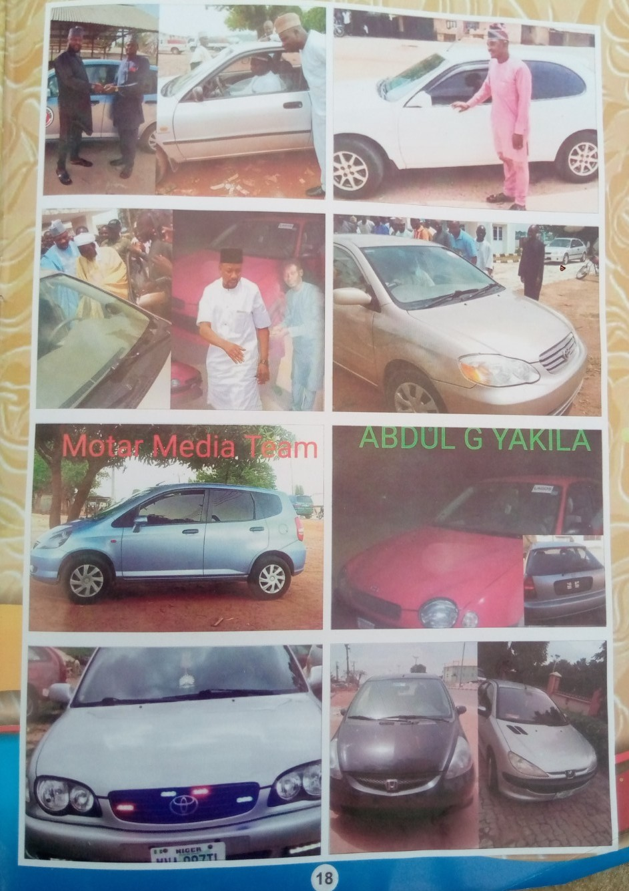
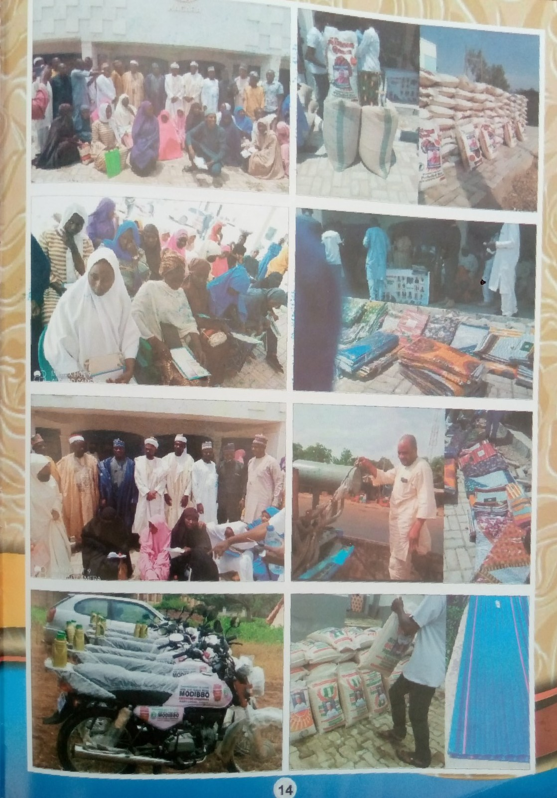

DAN-MODDIBO THE EXECUTIVE COUNCIL CHAIRMAN OF RAFI LOCAL GOVERNMENT FROM 2019 TO DATE
Onthe 12th of December 2019, Hon. Ismail Musa Dan-moddibo was sworn in as Executive Chairman of Rafi Local Government. As an administration that came with full confidence and determination for positive changes. An aim and tergets that never been compromised, inspite of the myriad of challenges that welcomed the tenure from rising insecurities and Corona Pandemic down to dwilling federal allocation and internal revenue.
Recalled that during his campaign and in his inauguration speech he promised to give priority to three keys areas which includes Security, Education and Infrastructure. And Alhamdulillah he kept to his words as none of these is left untourched.
Firstly his determination and resilience on tackling insecurity challenges that bedvils the entire rafi local government is what earns him a decades even among the oppositions and many onlookers who then questioned his capacity and competence. whithout exaggeration, his firmness and fealess stance on security matters have greatly influence whole government approach to insecurity menace in the state.
To curtail the security situation, Dan-moddibo became the first council chairman to established not fewer than 2,500 volunteer vigilantes 50 from each of the domain of 50 villages heads in rafi emirate. and he distributed over 80 motorcycles to other necessary gadgets, in order to facilitate their effective operations.

He equaly influenced the formation of strong military base in Kagara, and presence of Mobile Police Base in almost all major towns of rafi l.g.a. In addition to the courageous support given to such security apparatus at various times. not to mention many security measures taken by his administration whenever the need arises. To address the sudden attack on military formation as experienced in Allawa and Galadiman Kogo, Dan-moddibo facilitate the excavation of over 10,000 square meters trench round the military base at science college Kagara.
Education is said to be the key success and worthwhile development having termed with this reality, Dan-moddibo from day 1 never took all educational matter laxity. Apart from usual calls for commitment from all education personel, he often personally visit school to ascertain the progress and challenges in education sector aside the regular supervisory role plays by councor overseeing in education which in the process encourages teachers to give their best. In addition he pays monthly allowances to all Head teachetrs of rafi local government a first of it king in whole of the state.
To address the Infrastructure decay in our school, the council chairman have either renovated or constructed some block of classrooms in not fewer than 16 primaries schools across 11 wards of the local government. A gesture aimed at improving the conducive
atmospare for learning these schools includes:
1. Central Primary School Tegina.
2. UBE primary school Sabon Mariga.
3. AP primary School Pangu Gari Primary School.
4.
Lafeni Primary School Kagara.
5. Maikujeri Primary School.
6. Central Primary School Pandogari.
7. Ganye Primary School Kusherki.
8. Kawo Primary School.
9. Danjani Primary School.
10. UBE
Primary School Tashan Bala.
11. Madaki primary School Pandogari.
12. UBE Primary School Kwange.
13. Karaku Primary School.
14. Central primary School Madaka and UBE primary School T/Bako.
Again in educational related matter in one side, and health sector at the other side, Dan-moddibo have granted full scholarship to 30 indigens of refi local government to study in school of nursing and midwifery in order to address the deficiency we have in such fields.
In the area of Infrastructures, the chairman performed wonderfully. He erected many public utilities reconstructed and renovated some, while other are still ongoing. among these others include:
1. Reconstruction and
remodeling of the local government legislative office.
2. Reconstruction of the chairman office, vice chairman and council Secretary(including new office of the chief of staff).
3. Completion of abondoned Kagara
historical Madaki house.
4. Renovation of works department workshop and 6 offices of the department.
5.Rrenovation of kagara vetinary clinic.
6. Construction of 20 new lockup shops at Tegina Market.
7. Approved the construction of Maikujeri Market (compansation have being paid to the land owners already).
8. Construction of cell box culverts at Pandogari federal road, Karaya Makaranta.
9. Sambga road and Makabarta Tegina, construction of two seperate
3 ring cellbox and three seperate 2 cellbox culvert in Garun-gabas Jiwawa road, as part of the whole Jiwawa road construction project. the road project that led to repairs of the long abandoned heavy trucks belonging to
local government.
10. To ensure stable electricity supply the council chairman assist in supplying transformerand other faulty electricity equipment to many communities such as Tegina, Pandogari Kagara etc.,
Water Supply the council chairmanensures the the supply of good drinking water in our various communities, aside from the repairs of spoiled boreholes, Dan-moddibo have drilled more than 56 new boreholes minimum of four boreholes in the 11 ward of the
local government.
out which 18 are motorized. Some of this areas that benefited with the boreholes are as follows:
1. TEGINA WARD
Gidan Naibi, Unguwar Danlami, AP Tegina, Unguwar Dogo, Gimi.
2. KWANA WARD
Matseri, Babba Gida, Kwana gari, Godorro, Tashan Bala
3. YAKILA WARD
Hayin Makaranta, Garin Gabas, Pole waya, Pangu gari, Unguwar Babangida, Kadaura Unguwar Sarkin bori
4. MAIKUJERI
WARD
Unguwar Alarammomi, Unguwar Malam YAu, Tungan bako, Tungan Makeri 1, Tungan Makeri 2, Tugwama, UnguwarYahaya Na Sale Maikujeri
5. SABON GARI WARD
Unguwar Audu Batir, Unguwar Abubakar Fada, LAfene, Unguwar
Bawa Boka, Attahiru, Makabarta.
6. CIKIN GARI WARD
Gidan Madaki, Yana, Low cost Unguwar Musa mai lage, Karaya gidan Yusuf Tumbi, Yalwa Kabitu
7. KUNDU WARD
Kundu cikin gari, Ajami, Jiwawa, Bakodo
8. PANDOGARI WARD
Majalisa, Hayin Gobirawa, Bayan Old Dr. Bello, Kofar gidan Ango mai kifi, Unguwar Musa
9. KUSHERKI WARD
Unguwar Mangorori, Unguwar Maiwaina/ Tagwayen inji, Mazabar Audu Madaki, Mazabar gaAllah,
Kusherki cikin gari.
Although approvall had been given for the drillinh of KAWO and MADAKA wards but due to insecurity situation there boreholes are yet to be drilled. However Kawo Town Hand boreholes had still been metatmorphosed into motorized one.
Another score point of Dan-moddibo is iin the area of youth and women empowerment. where hundreds were empowered and assiisted with business capital for establishment of new enterprises or for bursting the existing ones.  Also in this category are those who earn their livelihood from the cars and motorcycles gifts received from Dan-moddibo records have showned that as council chaiman, Dan-moddiobo have distributed more than 22 cars and 20 motorcycles to different individuals, to which many have put them in use for commercial purposes.
Similarly, to ease the routine movement difficulties, and improvement in the general working condition of ssome top administrative personel of the local government, an official cars had been purchased for thr Vice Chairman, Counsil Secretary, House leader, director of personnel, Works and that of the Finance Department. So also purchased cars for 3 District Heads.
Again, to facilitate smooth running of his government affairs and easier information gathering and dessimination the chairman within his first month in office approved and issued 192 political appointments across all the 11 wards of the local government.
(Council Assistant on Security, C.A.S, Special Assistance S.A, and Senior Special Assistance SSA).
Dan-moddibo is among the council chairmen that cares much about the welfare of his local government employees he is always serious about the salaries of workers. in fact he was the first council chaiman to repaid salary arrears of some month on percentage during the turbulence period of percentage salary challenges.
In his magnimity to provide succor to his people, particularly vulnerable poor masses, mostly those fell victim of the heinous act of the banditry. Dan-moddibo at different times granted Assistance to hundreds of such victims. in one instance, he distributed
food and clothing items worth millions of naira to the orphans and widows that lost their love ones through banditry. where about 300 hundreds household each went home with a bag of rice, maize, millet, guinea corn and
2 atanfa wrappers plus 10,000. Aside from various welfare packages distributed durinng festive period Eid Sallah and Chrismas.

Worthy to note that, all these and others not mentioned here are highlight of achievements of Dan-moddibo as executive Chairman of Rafi Local Government. The aachievement he recorded despite of the rising insecurity challenges, despite not having financial Autonomy and above all it happened in a just turbulent year. the year that covid-19 Pandemic shakes the economy of not only Nigeria but all the Nations of the World.
One major secret behind all these achievements as council chairman is the synergy that exist between the executives and legislatives arms, couple with the cordial relationship he maintain with the departmental directors and co-workers. in fact the chaiman enjoy full supports on nevery developmental project from his councilors and other cabinet members as well as all staffs of Rafi Local Government.